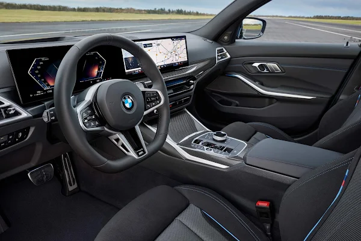
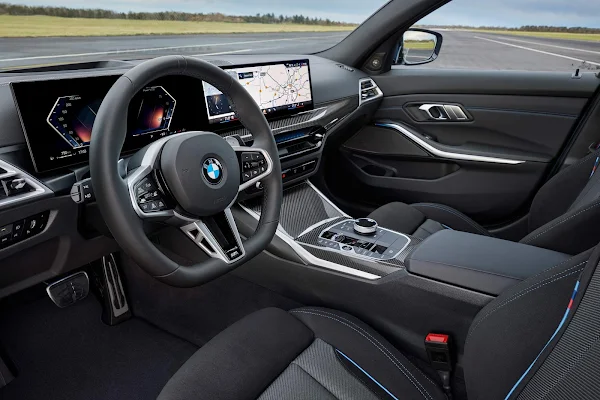

Como tudo começou?
A empresa foi fundada em 1916como fabricante de motores de aeronaves, que produziu de 1917 a 1918 e novamente de 1933 a 1945, criando motores para aeronaves que foram usadas na Segunda Guerra Mundial. Em 2017, a BMW foi a décima quarta maior produtora de veículos automotores do mundo, com 2.279.503 veículos produzidos e, em 2022, a sétima maior por receita. Em 2023, a empresa foi classificada em 46º lugar na Forbes Global 2000. A empresa tem uma história significativa no esporte motorizado, especialmente em carros de turismo, carros esportivos e no TT da Ilha de Man.
Qual foi o primeiro carro da bmw?
O primeiro carro produzido pela BMW foi o Dixi, que ganhou uma certa popularidade até o início dos anos 1930 e vendeu bem para uma época de forte retração econômica no país. Em 1933, a marca alemã, que sabia como vender seus carros, achou que era hora de fazer uma mudança radical no design deles.
Qual o carro mais atual da Bmw?
O novo carro já anunciado da bmw, é a bmw série 3 2025. Com ajuste no chassi para melhorar a dinâmica de condução, equilibrando esportividade e conforto. Vem acompanhado também do novo Sistema Operacional da BMW 8.5 e uma versão atualizada do BMW iDrive com QuickSelect, facilitando a navegação e outras funções através de uma interface intuitiva.
↓ Bmw Série 3 2025
.webp)
.webp)
.webp)
.webp) 
